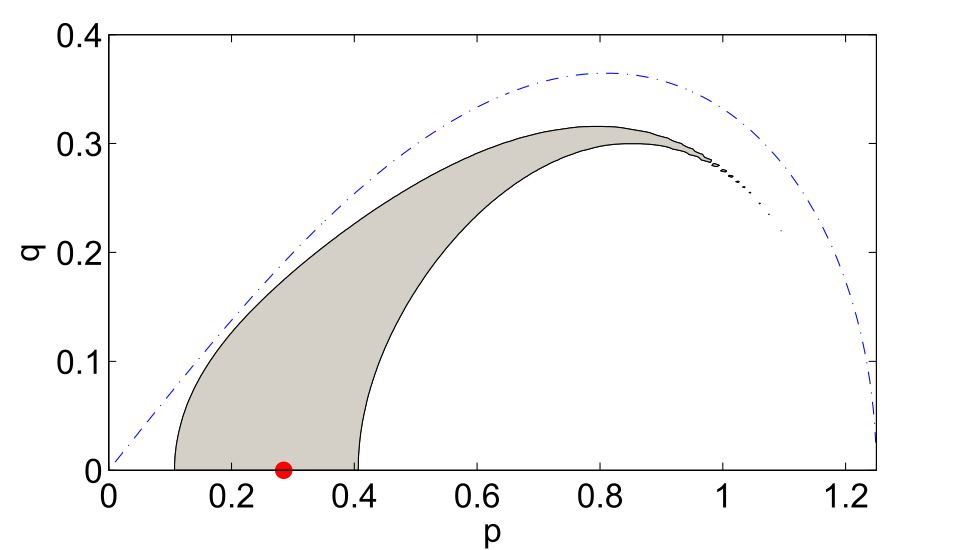
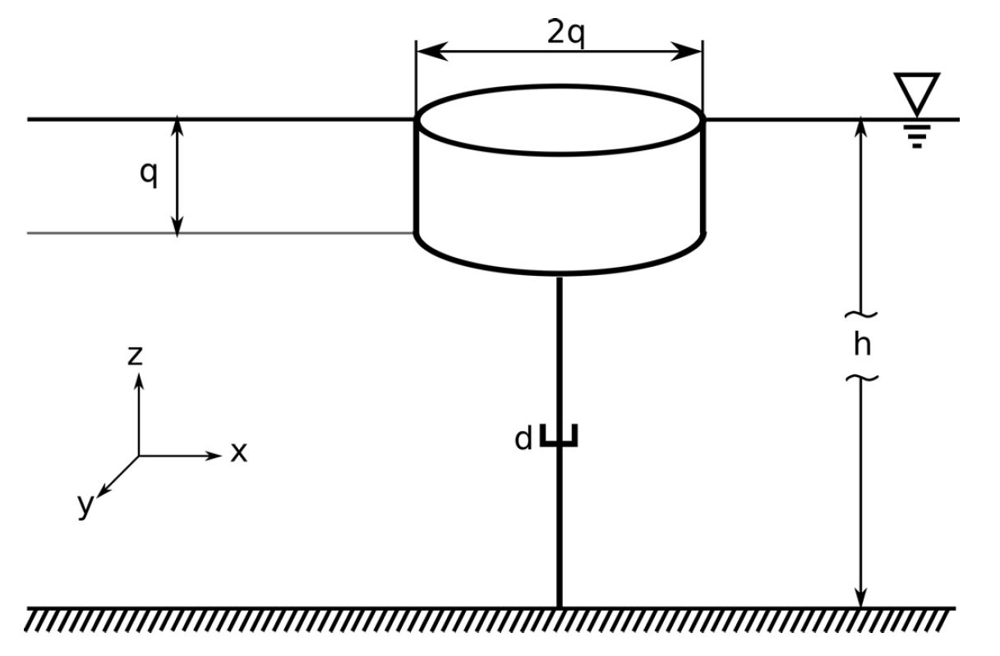

For weakly nonlinear waves, nonlinear interaction appears with quadratic nonlinearities in shallow water, and cubic nonlinearities in deep-water. Such nonlinearities are responsible, for example, for the amplitude-dependent change in wave celerity found by Stokes in the mid 19th century. Since work by Phillips and others, the role of nonlinear resonant and near-resonant interactions has become appreciated as a major contributor to the dynamics of ocean surface waves.
In linear theory, waves pass through one another unchanged due to the principle of superposition. Once weak nonlinearities are taken into account, each wave is coupled with the other waves present in the sea. Thus, the frequency of a short wave may be appreciably changed by the presence of long waves (the short waves "surf on top of" the longer waves). The same principle can be shown for spectra of waves [2], where frequencies higher than the spectral peak frequency are most effected by a type of generalized Stokes' correction.
In deep water, the phenomena associated with cubic nonlinear interaction are captured by the Zakharov equation, from which the nonlinear Schrodinger equation can be derived in the limit of narrow-bandwidth. We have used this Zakharov equation formulation extensively in studying nonlinear waves, and likewise explore stochastic analogues which govern averaged properties, like the energy distribution of the sea-states. In particular, going beyond the paradigm of Hasselmann's kinetic equation, we are interested in the effect of statistical inhomogeneity [4], as well as fast evolution of homogeneous sea-states [2]. A review of some recent developments, in both deep and shallow-water recently appeared in [1].
We developed a number of analytical models of wave energy converters, based on floating plates [4], floating cylinders [1], and coupled floating cylinders [2,3] in order to study device design, response, and survival in a range of sea states. While idealized, the linear theory for devices can be described in a mathematically simple form, and may be understood analytically without resorting to approximations.
The devices investigated were used to model arrays of converters, and to study the wave-energy potential in spectral sea-states, ultimately with a directional distribution. The potential for wind regrowth of waves between arrays was explored over an indicative ocean basin, and the effects of array spacing explored [3,4]. Using device responses, a refinement to the power matrix in terms of device survival was proposed in [1], which suggested a boolean survivability matrix be added to the usual calculation of mean annual energy production. This idea was explored further using data from the Israeli Mediterranean, resulting in recommendations for device sizing. While the Israeli Mediterranean is a high-variability but low mean power site, making it less than ideal for wave-energy extraction, the methodology used is easily applicable to any device design and location for which data is available.